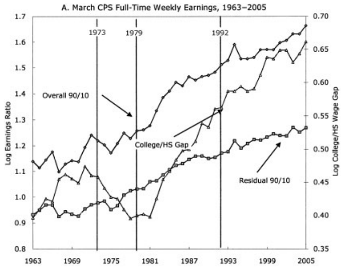
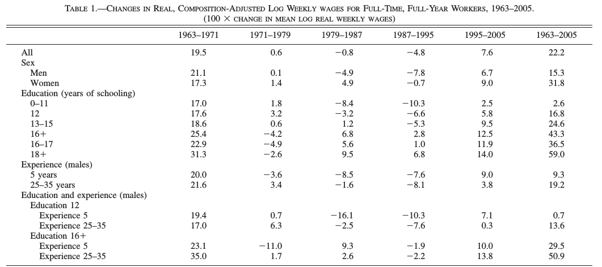
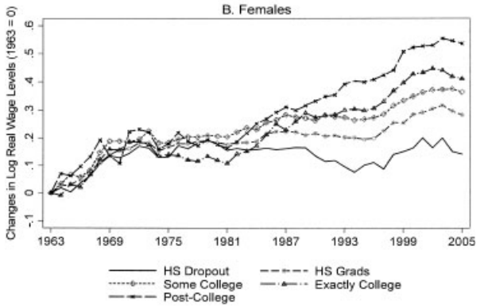
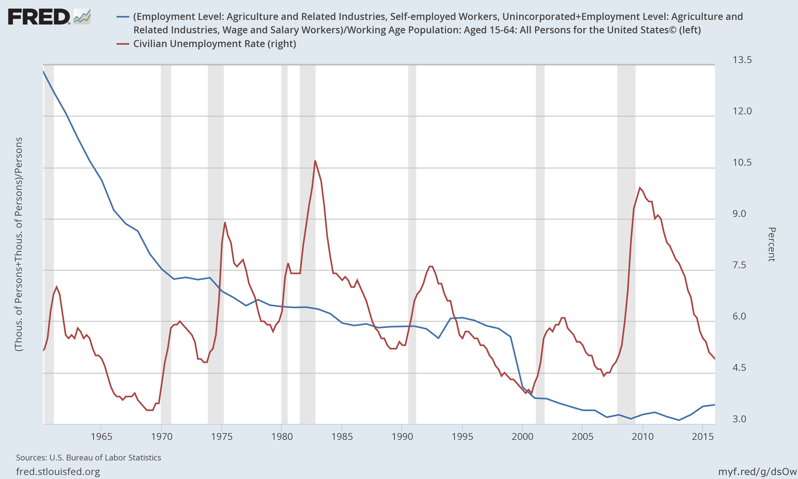
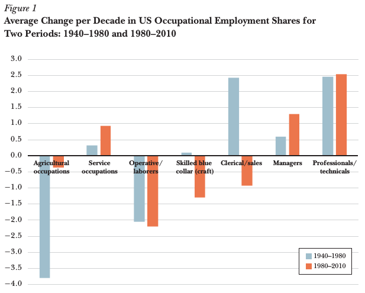
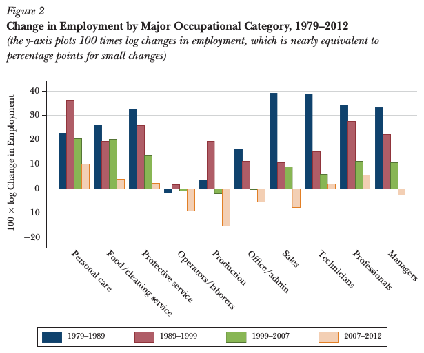
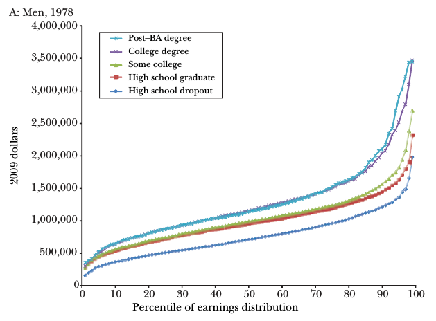
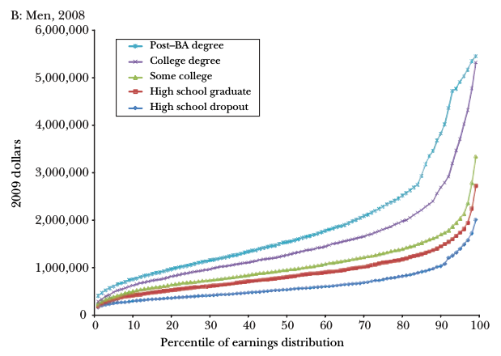

Labor Market Polarization
ECON 499: Economics of Inquality
Winter 2018
So far:
- Top incomes have diverged rapidly since the 1980s
- True in the cross section and life-cycle (for men and women)
- Top incomes largely determined by market forces ("talent")
- How do people acquire talents?
- Why are "talents" more valued today than in the past?
Changes in inequality
- Measure inequality with the 90/10 quantile ratio
- Since top 10% income share increasing (Piketty and Saez), expect 90/10 ratio to grow
- Similar to quantile ratio, compare relative wages of college educated vs non college educated


Skilled workers
- The supply of skilled workers has been increasing steadily
- 10% of workforce had college education in 1960
- 30% in 2005
- We would expect wages for skilled workers to decline


The skill premium
- The skill premium is the "reward" to education in the form of increased wages
- The wage premium has been increasing steadily
- Supply also increasing
- This means demand for skilled labor must be increasing at a faster rate
Why Are There Still So Many Jobs? (Autor, 2015)
- Technology and "automation" have increased rapidly, yet unemployment doesn't seem to have changed
- Why hasn't automation created unemployment?
- What are the implications of this technological change?


Automation
- Technology replacing jobs is not a new phenomenon
- Many agricultural jobs have been automated
- 41% of all workers in 1900, 2% today

Complements and substitutes
Complements:
- Factors that are used together in the production process
- Example: Programmers and computers
Substitutes:
- Factors that can replace one another
- Example: Farm worker, combine harvester
Technology as a complement
- Some tasks are complemented by technological innovation
- Faster computers make programmers (and economists!) more productive
- ATMs allow bank tellers to do other work, e.g. customer service, sales, etc
- Workers have historically moved to technology-complementary industries as jobs are automated
- Increase in technology-complementary jobs offsets losses in substituted jobs

Jobs that aren't substituted by technology
- "Abstract" jobs: Problem solving, intuition, creativity. Professional, technical, managerial jobs.
- "Manual" jobs: Adaptability, language recognition, human interaction. Food prep, service, healthcare jobs.
Skills and jobs
- Abstract jobs usually require training and education
- Manual jobs can be learned "on the job", not as much education needed
- Jobs in the middle of the skill distribution are "hollowed out"

Technology complements
- Not all jobs benefit the same from technology
- Computer programmers might benefit more from faster computers than bank tellers from ATMs
- Differences in productivities will be reflected in wages
- Which workers are complemented by technological innovations?
Skill-biased technological change (SBTC)
- Technological advances have complemented high-skilled workers more than low-skilled workers
- Computers allow doctors to diagnose better, lawyers to find laws better, financial analysts to model asset prices better, etc
- We say that technological change has been biased toward skilled workers
- Skilled workers receive more benefits from technology than other workers

Middle-skill jobs
Break up "abstract" and "manual" jobs into routine and nonroutine categories:
- Nonroutine abstract: Management and professionals
- Nonroutine manual: Service, care providers
- Routine abstract: Sales, support, office
- Routine manual: Construction, manufacturing, mining

Trade and polarization
- Routine jobs are easily outsourced as well as easily automated
- Educated workers oversees compete against domestic workers for routine jobs
- Growth of India and China has greatly increased the supply of foreign workers who can perform routine jobs
Global vs local inequality
- The rise of China and India has vastly reduced global income inequality
- With growth comes new workers that can compete in global market
- This hollows out middle skill, routine tasks
- Makes inequality increase in developed countries
Returns to education
- If returns to education are so high, why doesn't everyone get advanced degrees?
- Returns to education high enough to make student debt "worth it"



Credit constraints
- High-income students might have better access to credit markets
- More students are dependent on private student loans in addition to Government loans
- Private loans are often not available to low-income students
Increasing value of leisure time (speculative)
- "The Free-Time Paradox in America", Atlantic Magazine, September 2016
- Low skill, young men work much less today than in the past
- 3/4 of additional leisure time is spent playing video games
- "Life satisfaction" surveys indicate they are just as happy
Consumer surplus and leisure
- Entertainment goods are much cheaper today than in the past
- People are willing to pay high amounts for entertainment, but prices are low
- Internet based goods are very low cost (Wikipedia, Netflix, Facebook)
- The same level of income can buy more utility (satisfaction)
- Some people might be less willing to work hard to become rich (marginal utility of income is lower)
Summary
- Automation and trade replace jobs that require some skill
- High skill and low skill jobs not replaced by automation or trade
- Technology is "biased" toward high-skilled jobs, increasing wages
- High skilled and low skilled workers are pulled apart
- Some low skilled workers might be content to not acquire skills (speculative!)